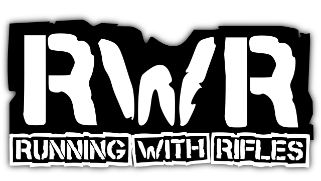
Compare:
| Image | Name | Type | Faction | Price (RP) | Magazine size | Fire rate (RPM) | Accuracy factor | Recoil | Recoil recovery | Kill probability | Fall-off Start(m) | Max range(m) | Bullet Speed(m/s) | Speed mod(%) | Commonness |
|---|---|---|---|---|---|---|---|---|---|---|---|---|---|---|---|
| 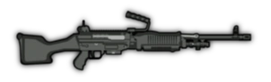 | M240 | Medium machine gun | Greenbelts/ Unlockable | 2 | 100 | 723 | 0.62 | 0.8 | 0.8 | 0.67 | 35 | 70 | 100 | -10 | 0.05 (16.6%) |
| 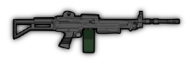 | IMINegev | Light machine gun | Graycollars/ Unlockable | 2 | 100 | 779 | 0.63 | 0.8 | 0.8 | 0.65 | 45 | 78 | 110 | -8 | 0.05 (16.6%) |

|
PKM | Light machine gun | Brownpants/ Unlockable | 2 | 150 | 652 | 0.56 | 0.8 | 0.9 | 0.63 | 33 | 66.5 | 95 | -6 | 0.05 (16.6%) |
| 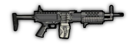 | StonerLMG | Light machine gun | Rare / Secret crate | 160 | 80 | 600 | 0.75 | 0.8 | 0.9 | 0.6 | 35 | 75 | 100 | -7 | 0.0003 |
| 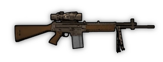 | Stoner62 | Light machine gun, full-auto,
1.4x zoom |
Rare | 450 | 20 | 652 | 0.92 | 0.35 | 1.4 | 0.7 | 52.8 | 99 | 110 | -6 | 0.00002 |
| 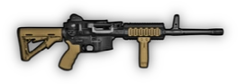 | ARESShrike | Light machine gun,
6 round burst / semi-auto |
Gift Box | 300 | 60 | 705 (400) | 0.9 | 0.1 | 0.4 | 0.57 | 38 | 70 | 100 | -7 | 0 |
| 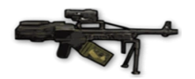 | PechenegBullpup | Bullpup machine gun, 1.2x zoom | Rare | 430 | 150 | 545 | 0.8 | 0.7 | 1.4 | 0.7 | 42 | 90 | 100 | -8 | 0.00005 |
| 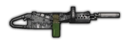 | KACChainSAW | Light machine gun, full-auto,
suppressed |
Rare | 550 | 150 | 1200 | 0.55 | 1.5 | 1.5 | 0.46 | 30 | 72 | 100 | -42 | 0.00005 |
| 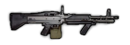 | M60 | Machine gun | Gift Box | 700 | 100 | 600 | 0.725 | 2.5 | 1.15 | 0.71 | 35 | 65 | 100 | -11 | 0 |
| 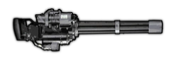 | WBII Microgun | Heavy machine gun | Rare | 800 | 200 | 1875 | 0.55 | 1.5 | 0.7 | 0.5 | 30 | 72 | 120 | -45 | 0.00004 (0,0039%) |
| 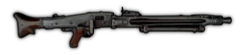 | MG42 | Machine gun | Very rare | 1200 | 150 | 1200 | 0.7 | 0.2 | 0.9 | 0.62 | 42 | 90 | 120 | -12 | 0.00001 (0,00074%) |
| 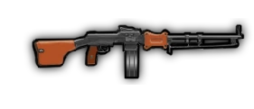 | RPD | Machine gun with optional bipod
(bipod stats in parenthesis) |
Gift Box | 610 | 100 | 652 | 0.7 | 0.8 (0.4) | 0.82 (1.3) | 0.6 (0.62) | 30 (35) | 70 | 100 | -9.2 (-13) | 0 |
| 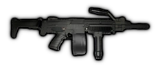 | Ultimax100 | Negative recoil machine gun, optional assault rifle mode (AR mode stats in parenthesis) | Gift Box | 800 | 100 (30) | 667 (600) | 0.8 (0.85) | -0.15(-0.2) | -1.2 (-1.35) | 0.6 | 51 (52) | 63.7 (65) | 98 (100) | -10 (-7) | 0 |
| 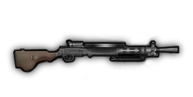 | DP28 | LMG with optional shield (shield can only shoot prone, stats in parenthesis) | Gift Box | 280 | 47 | 600 | 0.78 | 1 (0.8) | 2.4 | 0.65 | 36.3 | 70.4 | 110 | -10 (-30) | 0 (limited duration: Halloween Box only, will hopefully be added to another box soon) |
| 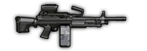 | M249 | Light machine gun, 1.1x scope, optional suppressor (stats in parenthesis) | Gift Box | 249 | 120 | 779 | 0.85 | 0.65 | 0.85 | 0.58 (0.53) | 35 (30) | 70 (70) | 100 | -6.5 | 0 (Cooler Box 1) |
| 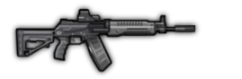 | RPK16 | Light machine gun that allows for movement whilst firing, with an optional Long Barrel attachment that will require the operator to be instead crouched or prone (stats in parenthesis) NOTE: Standard mode has a minimum accuracy of 0.73 after sustained fire, whilst the Long Barrel mode has a minimum accuracy of 0.48 | Gift Box | 216 | 96 | 706 | 0.9 (0.95) | 0.55 (0.15) | 0.9 (0.7) | 0.55 (0.65) | 40 (50) | 70 (70) | 100 | -6 (-12) | 0 (Cooler Box 2) |
| 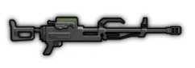 | QJZ89 | Heavy machine gun with 1.1x scope that can only be fired whilst prone or behind cover, minimum accuracy of 0.60 | Gift Box | 399 | 200 | 600 | 0.85 | 0.06 | 0.4 | 0.88 | 52.8 | 77 | 110 | -45 | 0 (Cooler Box 2) |